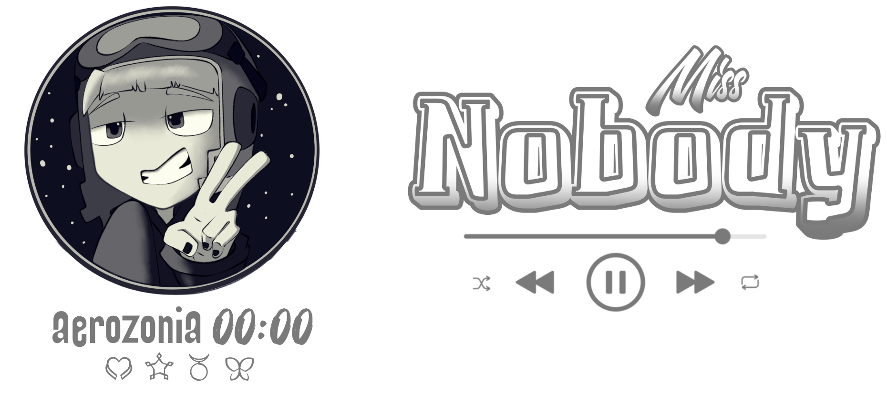
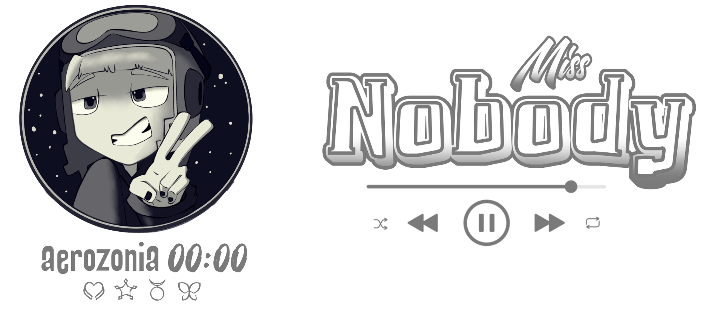

Aqui vou escrever - ou melhor, tentar escrever - sobre coisas que acontecem comigo. Então, desde já aviso que não espere ler algo mirabolante ou mesmo que aqui tenha frequência. Desculpa, mas eu tenho momentos e momentos...
:: LOG 01 ::
Olá, caro psiconauta... Faz um tempinho que terminei de "arrumar" esta página. Pretendia fazer a primeira postagem na primeira semana de outubro, mas acabei me distraindo terminando o site e focando em aprender mais JavaScript, então adiei bastante este momento.
Primeiro: completei ano no dia 05 de outubro, mesma data de lançamento do primeiro mini álbum do aespa (Savage). Segundo: nada mais de interessante aconteceu (rs), fora eu ter ganhado de presente um tamagotchi — peguei ranço em menos de 48 horas — e uma daquelas pistolas de fazer bolhas de sabão.
Terceiro: reassisti alguns filmes, como Convenção das Bruxas (1990) e o remake de 2020. Prefiro a versão com Anjelica Huston e achei uma pena terem desperdiçado o talento da Anne Hathaway num remake ruim e cheio de efeitos exagerados. Também assisti Invasor Zim e o Florpus, o que me fez sentir falta dos traços angulares e da paleta de cores mais escura da série; não curti o novo visual da Gaz.
Para finalizar: agora que vou passar algumas semanas sem ir ao laboratório, tenho focado em fazer capas para as minhas histórias e admito que gosto dos resultados, principalmente depois de ter descoberto cores que me agradam (#D989BD, #88B0BD, #F2F0D5, #D9851E e #343434).
Enfim — tenham todos uma ótima semana.
:: LOG 02 ::
Olá, caro psiconauta… Deixa eu contar umas coisas que têm me atormentado desde o primeiro post para cá.
Hoje terminei de postar a minha lore — a que inventei para uma possível temporada do SMCU do aespa, partindo de uma ideia de conceito solarpunk que gosto muito — no site que criei, mesmo sabendo que ninguém vai ler. Assim que salvei no GitHub, onde hospedei minha humilde aerozonia, percebi que aquela sensação de tédio infinita voltou me espancando com toda força.
Certo, deve ser normal neste momento porque vou ficar até o próximo ano (2026) sem ir ao laboratório, portanto não terei muito o que fazer, mas puta que o pariu, sabe? Geralmente gasto todo o tempo livre que tenho — e o que não tenho, às vezes — no Twitter. Só que, nesta semana, percebi o quanto aquela rede social está se tornando cada vez mais insalubre para mim, a ponto de me estressar no minuto em que abro o aplicativo, mesmo que meu intuito seja apenas acompanhar o aespa em tempo real. Além disso, “conversar” com pessoas tem me cansado — não por antipatia, mas porque exige energia demais: para medir palavras, para me defender, para evitar ser usada e para sustentar alguma versão mínima de mim. Tudo isso me drena e deixa minha mente em frangalhos.
Também me dei conta de que as vidas alheias não me interessam a ponto de eu acompanhá-las para comentar, e os criadores de conteúdo parecem superficiais demais para eu buscá-los como forma de entretenimento; os que acompanho não postam vídeos com frequência, daí explode de vez o cu do palhaço.
Assim, reli tudo o que escrevi até este ponto e aceito que posso ser considerada uma chata (rsrs), mas estou sendo uma chata sincera. Tenho muita dificuldade para encontrar algo que me tire do tédio e, aparentemente, blogs continuam sendo um refúgio para mim. Gosto de ler blogs, pequenos fragmentos de vida, porque textos simples me despertam a vontade genuína de escrever, mesmo quando tudo que produzo parece sem brilho.
Bem que eu poderia discorrer mais sobre minhas frustrações cotidianas imersa num tédio tão cretino, mas minha energia já começou a se esgotar. Então é aqui que me despeço, por enquanto…
Ah — antes de ir realmente: se o Bolsonaro virou oficialmente um presidiário, significa que ainda existe justiça no Brasil (e karma também). Dito isso, tenha um ótimo final de semana e beba água =)
 
